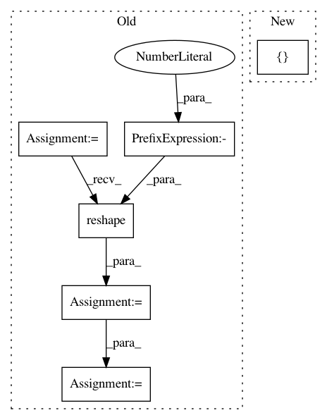

f8d9a6c144ef84bad2478a4ba4eedb1c559274e0,skimage/_shared/coord.py,,ensure_spacing,#,5
Before Change
if idx not in rejected_peaks_indices:
// keep current point and the points at exactly spacing from it
candidates.remove(idx)
dist = distance.cdist([coord[idx]],
coord[candidates],
distance.minkowski,
p=p_norm).reshape(-1)
candidates = [c for c, d in zip(candidates, dist)
if d < spacing]
// candidates.remove(keep)
rejected_peaks_indices.update(candidates)
After Change
coords = np.atleast_2d(coords)
if batch_size is None:
batch_list = [coords]
else:
batch_list = np.array_split(coords, batch_size)
output = np.zeros((0, coords.shape[1]))
In pattern: SUPERPATTERN
Frequency: 3
Non-data size: 6
Instances
Project Name: scikit-image/scikit-image
Commit Name: f8d9a6c144ef84bad2478a4ba4eedb1c559274e0
Time: 2020-11-11
Author: rfezzani@gmail.com
File Name: skimage/_shared/coord.py
Class Name:
Method Name: ensure_spacing
Project Name: dirty-cat/dirty_cat
Commit Name: 24a4c38ba686cfc61ecc52ccc30270d1d8833ca9
Time: 2018-12-21
Author: pierreglaser@msn.com
File Name: examples/05_scaling_non_linear_models.py
Class Name:
Method Name:
Project Name: PIQuIL/QuCumber
Commit Name: a3645eada1fd6b0dc2f262033a93b81a6ca84b55
Time: 2019-12-23
Author: emerali@users.noreply.github.com
File Name: qucumber/nn_states/density_matrix.py
Class Name: DensityMatrix
Method Name: rotated_gradient